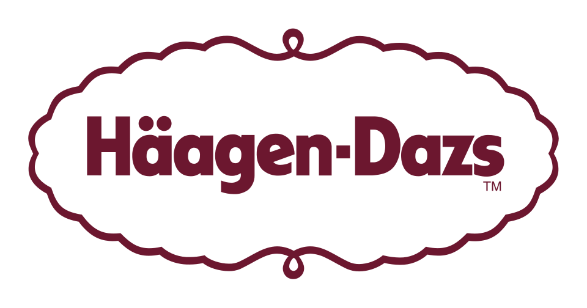

하겐다즈 Häagen-Dazs
하겐다즈(Häagen-Dazs)는 미국에서 출발한 아이스크림 브랜드이다. 아이스크림 카르통과 바, 케이크, 소르베, 프로즌 요거트 등 여러 냉동 디저트를 판매한다.
최종 업데이트

하겐다즈는 어떤 브랜드인가
하겐다즈는 바닐라, 초콜릿, 커피 세 가지 맛으로 시작한 아이스크림 브랜드이다. 1976년 11월 15일 뉴욕 브루클린에 첫 소매점을 열었으며, 식료품점과 전용 소매점을 통해 제품을 판매한다.
제품군은 아이스크림 카르통과 바, 케이크, 소르베, 프로즌 요거트, 프로즌 밀크셰이크, 젤라토, 아이스크림 샌드위치 등으로 구성된다. 아시아·태평양, 아메리카, 유럽을 포함한 전 세계 50여개국에서 판매된다.
제조 과정에서 공기를 거의 섞지 않는 조밀한 질감과 계란 노른자 외에 인공 유화제나 안정제를 사용하지 않는 구성을 특징으로 한다.
하겐다즈의 브랜드 아이덴티티는 무엇인가
덴마크어처럼 들리도록 만든 독창적인 이름과 공기를 거의 섞지 않은 조밀한 아이스크림, 인공 유화제와 안정제를 배제한 제조 방식이 구별점이다.
하겐다즈의 대표 제품과 서비스는 무엇인가
제품은 아이스크림 카르통, 아이스크림 바, 아이스크림 케이크, 소르베, 프로즌 요거트, 프로즌 밀크셰이크, 젤라토와 아이스크림 샌드위치 등으로 구성된다. 전통적인 맛과 함께 바닐라 스위스 아몬드와 바나나 포스터 같은 맛도 제공한다.
제조 과정에서는 공기를 거의 섞지 않아 조밀한 질감을 만들며 천연 유지방 비율을 높게 유지한다. 계란 노른자 외에 인공 유화제나 안정제를 사용하지 않고 인공 색소도 넣지 않는다고 설명한다.
제품은 식료품점뿐 아니라 아이스크림 콘과 선디 등을 판매하는 전용 소매점에서도 판매한다.
하겐다즈 로고는 어떻게 변해왔나
자주 묻는 질문
하겐다즈는 어느 나라 브랜드인가요?
하겐다즈는 미국의 식음료 브랜드입니다.
하겐다즈는 언제 설립되었나요?
하겐다즈는 1961년 설립되었습니다.
하겐다즈의 브랜드 아이덴티티는 무엇인가요?
덴마크어처럼 들리도록 만든 독창적인 이름과 공기를 거의 섞지 않은 조밀한 아이스크림, 인공 유화제와 안정제를 배제한 제조 방식이 구별점이다.
하겐다즈의 대표 제품은 무엇인가요?
제품은 아이스크림 카르통, 아이스크림 바, 아이스크림 케이크, 소르베, 프로즌 요거트, 프로즌 밀크셰이크, 젤라토와 아이스크림 샌드위치 등으로 구성된다.
하겐다즈는 어느 기업이 소유하고 있나요?
위키데이터는 모기업을 General Mills로 기록하지만, 한국어 위키백과 본문은 Froneri가 브랜드를 소유한다고 설명한다.
하겐다즈의 창업자는 누구인가요?
하겐다즈의 창업자는 Reuben and Rose Mattus입니다(위키데이터 기준).
하겐다즈의 본사는 어디에 있나요?
하겐다즈의 본사는 오클랜드에 있습니다(위키데이터 기준).
출처와 검증
하겐다즈 관련 참고: 공식 웹사이트 · 위키데이터 Q1143333 · 한국어 위키백과 · 영어 위키백과. 브랜드명은 한글과 원어를 함께 표기하되 데이터에 없는 표기는 만들지 않습니다. 기원 국가·설립연도는 검수된 정의문에서 확인된 값을 우선하고, 없을 때만 공식 웹사이트 URL이 일치하는 위키데이터 개체의 값을 씁니다. 위키데이터 값은 2026-09-20 기준입니다.